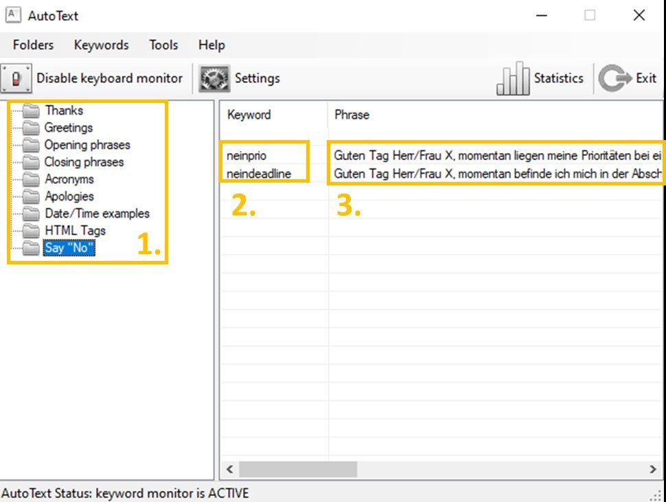
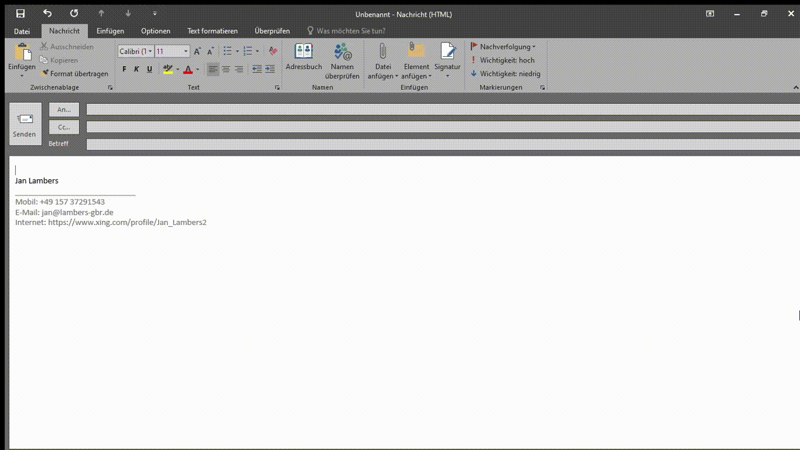

Die Kunst des schnellen Nein-Sagens
„Nein-Sagen“ können ist eine hilfreiche, besser noch absolut notwendige Fähigkeit im Arbeitsleben. Wer im Job nicht „Nein-Sagen“ kann, geht hoffnungslos unter. Aber keine Sorge, die Fähigkeiten des Nein-Sagens können Sie trainieren und es sich sogar mit technischen Hilfsmitteln etwas leichter machen. Die wichtigste Voraussetzung für das Nein-Sagen können ist seine seine Ziele und Aufgaben genau zu kennen und dafür einzustehen, unter anderen indem man zusätzliche Aufgaben und Anfragen ablehnt. Daneben können Sie es sich auch mit der Nutzung von vorgefertigten Textbausteinen leichter machen.
Der Frust mit der Anfrageflut
Wer war noch nicht in folgender Situation? Sie arbeiten akribisch an einem Projekt, dessen Deadline sich nähert und nähert. In mitten dieser angespannten Situation meldet sich Ihr Vorgesetzter, Ihre Kollegin, oder ein Auftraggeber mit einer weiteren Aufgabe. Durch diese Aufgabe könnten Sie eventuell einem Freund helfen und dabei sogar Ihrer Karriere einen Boost verpassen. Sie werden sich die Sache mal ansehen, schreiben Sie zurück. Doch ehe Ihnen auffällt, wie Ihnen geschieht, stecken Sie bis zum Hals in einem 120%-Workload. Mir jedenfalls ist diese Situation bekannt. Im Nachhinein hätte ich doch einfach Nein sagen sollen. Nein sagen und das vorzugsweise bestimmt, freundlich und schnell.
Eine mögliche Lösung, um schnell Nein zu sagen: Text Expander
Genau dafür gibt es glücklicherweise moderne Hilfen in Form von Programmen. Diese werden Text Expander (Texterweiterung) genannt. Geben Sie z.B. in einer E-Mail das Wort „neindeadline“ ein, dann wandelt sich das Wort automatisch in den folgenden Text um: „Guten Tag Herr/Frau X, momentan befinde ich mich in der Abschlussphase eines für unser Unternehmen wichtigen Projekts. Bitte haben Sie Verständnis dafür, dass ich erst ab dem TT/MM/JJJJ wieder freie Kapazitäten habe. Benötigen Sie dann noch immer meine Unterstützung, so werde ich Ihnen gerne helfen…“.
Damit Sie wirklich Geschwindigkeit und Vereinfachung des Nein-Sagens gewinnen, sollten Sie hier 3-5 verschiedene Textbausteine einrichten, mit verschiedenen Ablehnungsgründen.
Klingt wie Zauberei, ist jedoch erstaunlich simpel einzurichten. Zunächst benötigen Sie eines von vielen bereitgestellten Text Expander Programmen. Hier seien „Alfred“, „TextExpander“ und „FastKeys“ genannt. Zur Veranschaulichung wird im Folgenden das Programm „AutoText“ verwendet, welches für einzelne Nutzer kostenlos ist. Sie installieren das Programm und schon kann es losgehen.

- Auf der linken Seite befindet sich eine Ordnerstruktur. Hier können Sie Ihre Textbausteine beliebig sortieren und Kategorien bilden. Ich habe hier die Kategorie „Say No“ definiert.
- Innerhalb des Ordners befindet sich die Spalte „Keyword“, mit dessen Sie das Wort definieren können. Ich habe hier zusätzlich zu „neinprio“ noch einen weiteren Textbaustein mit dem Schlüsselwort „neindeadline“ hinzugefügt.
- Innerhalb der Spalte „Phrase“ wir dann festgelegt, durch welchen Text das Schlüsselwort ersetzt wird.
Welche Phrase ich gewählt habe und wie das in der Praxis aussieht, sehen Sie in diesem kurzen Video:

Sie werden sehen, das Ablehnen von Aufgaben geht viel schneller, wenn Sie nicht erst über den richtigen Text nachdenken und diesen schreiben müssen.
Weitere Einsatzmöglichkeiten von Text Expandern
Wie Sie sich sicher schon denken können, ermöglichen Text Expander noch viel mehr als Nein zu sagen. Sie können damit auch Ja sagen. Sie können jegliche regelmäßig wiederkehrenden Texte in Ihren E-Mails automatisieren, bzw. teilautomatisieren. Ihrer Phantasie und Schaffenskraft sind hier keine Grenzen gesetzt. Jeden Tag schicken Sie eine Liste mit den neuen Kennzahlen an eine Handvoll Menschen? Mit dem Schlüsselwort „kennzahlenrausdamit“ vervollständigt sich Ihre E-Mail, die an Beständigkeit und vor allem Geschwindigkeit kaum zu überbieten ist.
Text Expander alleine reichen nicht…
…sie sind lediglich eine Hilfe, um leichter Nein sagen zu können. Haben Sie generelle Probleme, Anfragen abzulehnen, dann reicht ein Programm leider nicht aus. Beschäftigen Sie sich mit sich selbst. Warum fällt es Ihnen so schwer? Habe ich eventuell Probleme mit meinem Selbstbewusstsein? Eine Hilfe finden Sie unter diesem Link. Außerdem kann Ihnen eine gute Priorisierung Ihrer Aufgaben weiterhelfen.
Abschließend danke ich Deborah Tennen von Zapier für Ihren Artikel „Use this tech trick to help you say no“, welcher mich auf die Möglichkeiten von Text-Expandern aufmerksam gemacht hat. Hier der Link zu ihrem Artikel.
Weitere Artikel

Puffer sichern Flow
Es wird allerhöchste Zeit, sich von der Idee, dass nur wer am Limit arbeitet, effizient sei, zu verabschieden. Unter Volllast, ganz ohne Puffer zu arbeiten ist eine „gute“ Voraussetzung für Unzuverlässigkeit, Fehler …

Kollaboration im Office mit Kanbanize
Ein Tool, was mich für die digitale Kollaboration im Office begeistert ist Kanbanize. Dort kann man wirklich sehr fortgeschritten und smart zusammenarbeiten. Mit seinen verschiedenen Perspektiven auf den Flow im Office, der …